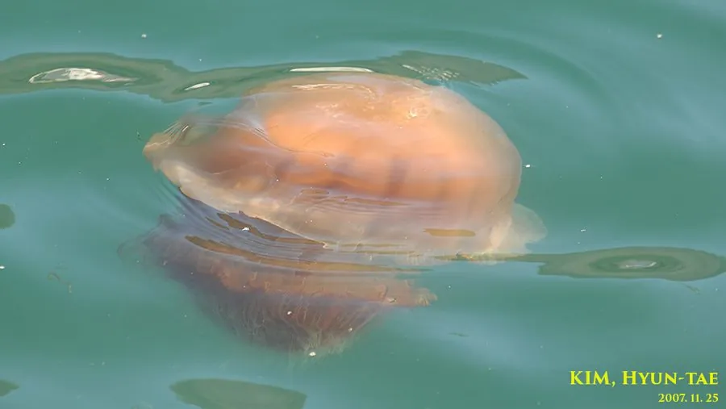

其他无脊椎动物 · 动物界
沙海蜇 Nemopilema nomurai

伞径可超过一米、体重可达两百公斤的巨型水母，触手刺细胞强烈，蜇伤剧痛并可致过敏，黄海东海常大量出现。
- 分类
- 门刺胞动物门纲钵水母纲目根口水母目科根口水母科属沙海蜇属
- 栖息环境
- 中国黄海、东海与日本海近海的表层至中层水域，随海流漂游
- 地理分布
- 西北太平洋，包括中国黄海、东海、日本海和朝鲜半岛沿海
- 保护级别
- 尚无保护级别；近海大量出现时对渔业造成损失
物种志
沙海蜇是我国近海体型最大的水母，伞径通常一米左右，最大可达一点五米，体重可超过两百公斤。它的伞部呈半球形，伞缘有许多缘瓣，伞面呈黄褐、灰褐或乳白色，常有深色的斑点。它的口腕粗壮，愈合形成许多皱褶状的结构，垂在伞下，触手和口腕上密布刺细胞囊，能射出带毒的刺丝。
它分布于西北太平洋，包括中国黄海、东海、日本海和朝鲜半岛沿海，成体在海流中漂游，随潮流和季风移动，常在夏秋大量出现于近海，有时成群进入渔网导致网具破裂、渔获减产。它以浮游动物和小鱼为食，靠触手捕获后送入口腕。它的生活史包括水螅体和水母体两个阶段，水螅体附着在海底硬物上，通过横裂产生碟状幼体。它的刺细胞蜇人后会引起剧痛、红肿和灼烧感，严重时出现呼吸困难、心悸甚至过敏性休克，被蜇后应先用海水冲洗、去除触手残片并尽快就医，切勿用淡水或徒手擦拭。
形态与习性
- 伞径通常约一米，最大可达一点五米
- 体重可超过两百公斤
- 伞面黄褐、灰褐或乳白，常有深色斑点
- 刺细胞触手与口腕密布刺细胞囊
- 栖息水层近海表层至中层，随海流漂游
- 蜇伤处理海水冲洗、去除触手残片，尽快就医
趣味知识
- 它是我国近海最大的水母，一只就有一百多公斤重。
- 成群涌进渔网时能把网撑破，渔民叫它毁网的沙蜇。
- 被蜇后千万别用淡水冲，那会刺激刺细胞放出更多毒液。